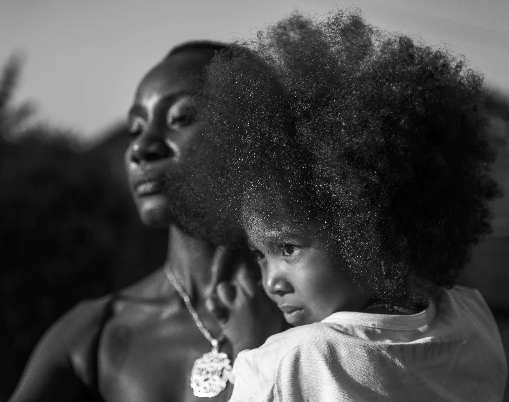
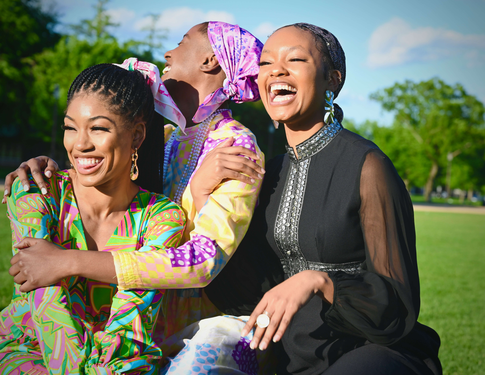

Four interconnected areas of work — each grounded in lived experience, shaped by what families and communities need.
Spaces shaped by lived experiences where individuals, families, and community members can gather to share, reflect, learn, and build connection.
These gatherings create room for real conversations — ones that centre the knowledge, experiences, and voices of Black and African-descended community members.

Practical guidance, resources, and accessible tools grounded in lived experiences and community knowledge.
We develop materials that are practical, clear, and built around what families actually face — not generic resources, but tools shaped by real community insight.

Community-rooted learning and collaboration that encourages reflection, accountability, meaningful engagement, and stronger community response.
We work with schools, workplaces, and organizations to strengthen how they understand and respond to the needs of Black and African-descended children, youth, and families.
Sign up to receive updates on upcoming sessions, new resources, and community opportunities as they develop.
We respect your privacy. No spam, ever.